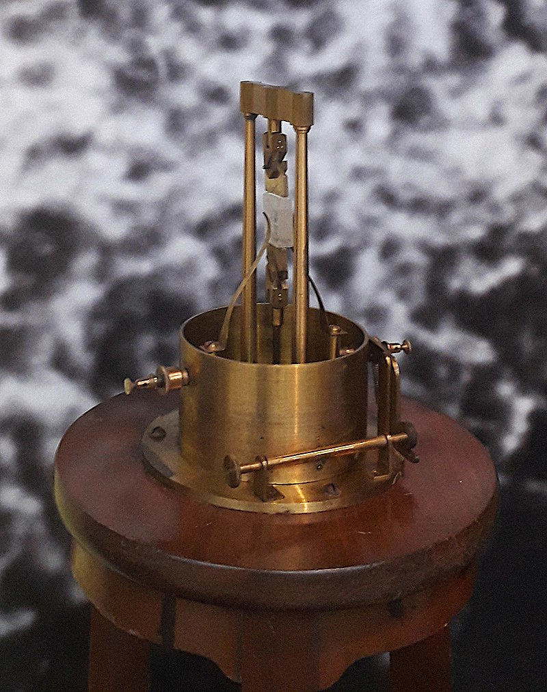
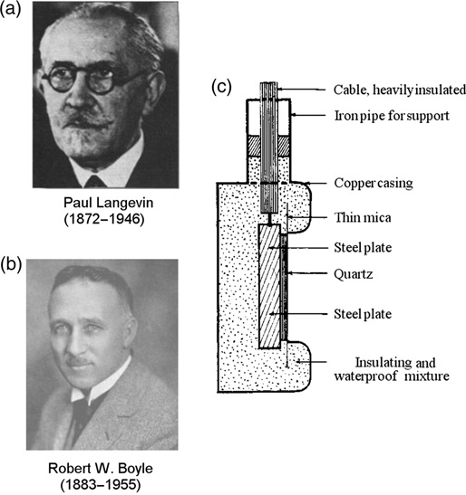
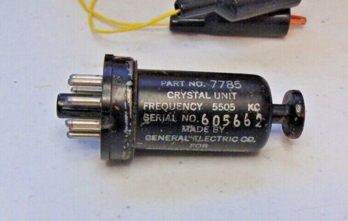
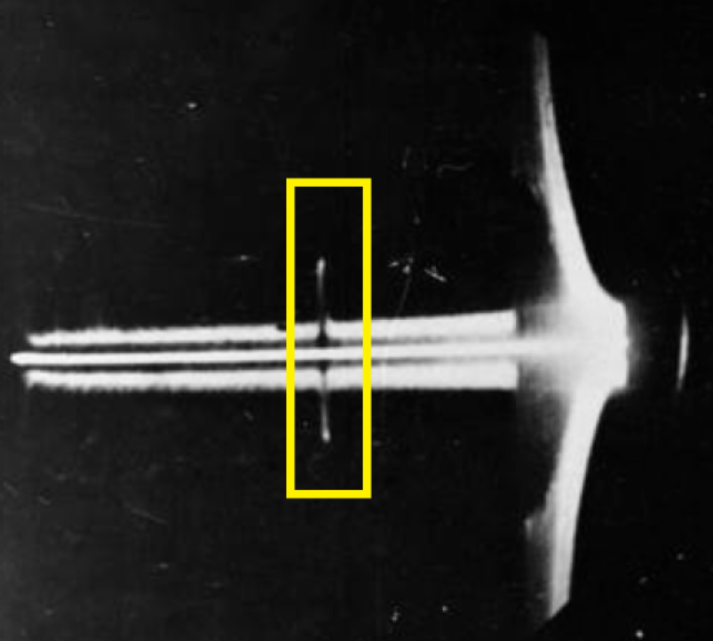
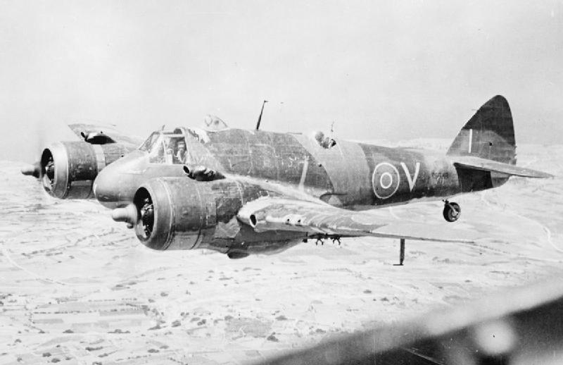
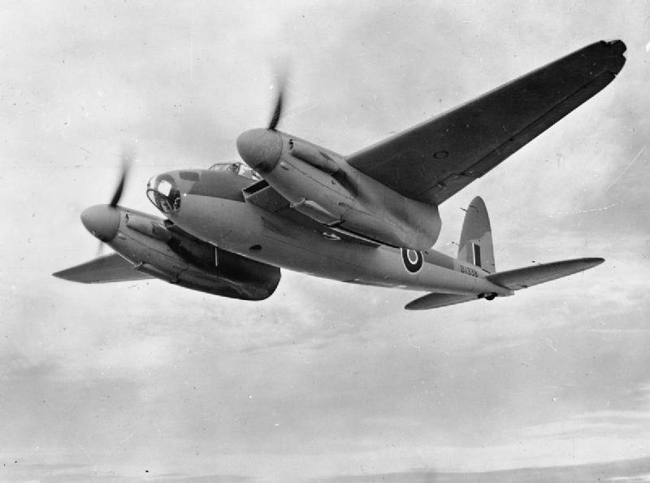
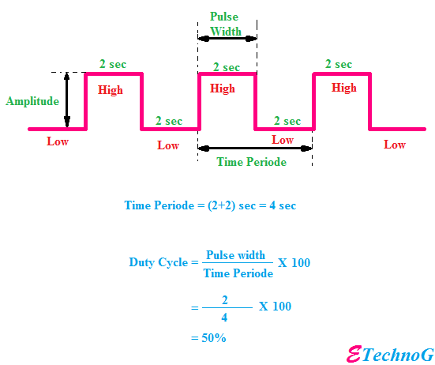

레이더 개발 이야기 (12) - 근시도 아니고 원시도 아닌 레이더
게시: 2022-12-08T06:30:36+09:00
<브라질에 의존한 전략 물자> 레이더의 전파가 40 MHz냐 160 MHz냐는 매우 중요한 문제. 근데 이런 단위는 모두 주파수의 단위. 전파의 파동 주파수는 대체 무슨 장치로 만들어냈을까? 압전(Piezoelectricity) 효과는 이미 18세기 후반에 발견되었으나, 이걸 실험으로 입증해보인 것은 바로 퀴리 부인의 남편인 Pierre Curie과 그의 형 Jacques Curie.

(윗 사진이 퀴리 형제가 황옥, 수정, 로쉘 소금 결정 등등의 다양한 결정체로 그런 실험을 수행했던 장치)
압전 효과는 한동안 신기한 과학 현상으로만 알려졌으나 이게 실제 활용에 사용된 것은 역시나 전쟁 때문. WW1 동안 잠수함 탐지 방법을 연구하던 프랑스 물리학자 Paul Langevin이 active sonar 개발에 수정의 압전 효과를 이용한 변환기(transducer)에 대한 특허를 출원. 참고로 폴 랑쥬벵은 남편을 잃은 퀴리 부인과 염문을 뿌리기도 한 사람.

(윗 그림이 폴 랑쥬벵과 그의 수정 압전 효과를 이용한 변환기. 폴 랑쥬벵 아래의 로버트 보일은 별도로 비슷한 연구를 한 미국 과학자.)
이후 수정 압전 효과를 이용한 전자시계와 무전기, 라디오 방송 장비 등등 온갖 전자장비가 WW2 이전에 개발되었고 1939년 미국의 1년 생산량만도 10만개. 이때 사용된 수정은 모두 천연 수정. 수정이 나는 나라는 많지만 산업용 원료로 안정적인 품질과 물량을 대줄 나라는 사실상 딱 하나, 브라질 뿐. WW2가 발발하자 정밀한 무전기와 레이더 생산을 위해 갑자기 수정 수요가 폭증했고 브라질에서의 수입량만으로도 부족할 지경. 이는 결국 합성 수정의 개발로 이어짐.

(윗 사진은 WW2 동안 생산된 미군 무전기용 Quartz Crystal ARC-5 Transmitter)
<근시도 아니고 원시도 아니고> 온갖 어려움을 겪어가며 야간 전투기용 공대공 레이더를 개발하던 보웬은 1937년 100 watt짜리 전파 송신기를 갖춘 항공기 탑재용 레이더 시제품을 만들어냄. 날개 좌우 양쪽 끝과 상하 양쪽 끝에 각각 수신 레이더를 달아, 목표물과의 거리는 물론 목표물이 좌측에 있는지 우측에 있는지, 그리고 위쪽에 있는지 아래쪽에 있는지 간신히 알아낼 수 있는 정도의 물건을 만들어냄. 이 초기 공대공 레이더의 가장 큰 문제는 아무래도 전파 파장의 길이. 당시 진공관으로 가능한 전파 길이가 너무 길다보니 전파에 방향성을 주지 못해 전파가 부채살처럼 넓게 퍼졌다는 것. 이게 문제가 되었던 것은 대지 반사파 때문. 전방을 향해 전파를 쏘아도 위 아래로 퍼져 나간 전파가 결국 지상에 부딪혀 반사된 반사파가 돌아오는데, 대지는 넓고도 끊임없이 펼쳐져 있으니, 전파를 쏘는 항공기의 고도 이상의 거리에서 돌아오는 모든 반사파들이 그 강력한 대지 반사파에 묻혀 버린다는 것.

(이 사진에서 노란색 박스 속의 blip이 적기와의 거리. 맨 오른쪽의 삼격형 뚜껑 같은 큰 반사파가 대지 반사파.)
결국 공대공 레이더의 최대 탐지거리는 어이없게도 그 탑재 항공기의 고도에 달려있었음. 게다가 당시 프로펠러 전투기들의 운용 고도가 그리 높지 못했음. 가령 영국 공군이 초기 야간 전투기로 활용했던 쌍발 엔진의 중형 전투기인 Bristol Beaufighter의 최대 고도는 5.8km. 후기 야간 전투기로 활용한 쌍발 경폭격기 de Havilland Mosquito의 경우는 11km.
 
(윗 사진이 Bristol Beaufighter. 원래 전투기이지만 뇌격기로도 사용됨. 아래 사진이 de Havilland Mosquito. 원래 폭격기이지만 전투기로도 사용됨.)
그러니까 일단 독일 폭격기가 영국 도버 해협에 나타나면, 그것이 지상 레이더인 Chain Home 레이더의 감시망 안에 있을 때 그 유도를 받아 재빨리 최소한 5km 안쪽까지는 접근해서 추격할 수 있어야 했음. 게다가 야간 전투기가 높은 곳에서 저 아래 1km 고도를 나는 독일 폭격기를 탐지한다고 해도, 그걸 격추하러 쫓아내려가면 결국 낮은 고도가 된다는 것. 그러니 적기를 레이더로 탐지한 뒤 3백m 안쪽까지 접근할 때까지는 고도니 거리니 지도 상의 위치니 하는 것들이 모두 아구가 딱 맞아야 했음. 게다가 일단 레이더는 너무 가까우면 탐지가 안 됨. 레이더파는 pulse 형태로 날아가는데, 그 펄스 길이(pulse width, 아래 그림 참조), 즉 레이더파 송신기가 ON 되었다가 OFF 될 때까지의 시간이 레이더의 최소 탐지거리를 결정. 아직 펄스가 발사되고 있는데 반사파가 되돌아오면 탐지가 불가능하기 때문. 전파는 빛의 속도로 움직이니 펄스 길이가 1 micro-second (µs)일 경우 최소 탐지거리는 약 150m. 그리고 당시 진공관 기술로는 이 1 µs의 펄스 길이를 만드는 것이 매우 어려웠음. 결국 온갖 방법을 써서 만든 최소 탐지거리는 240m 정도였다고.
